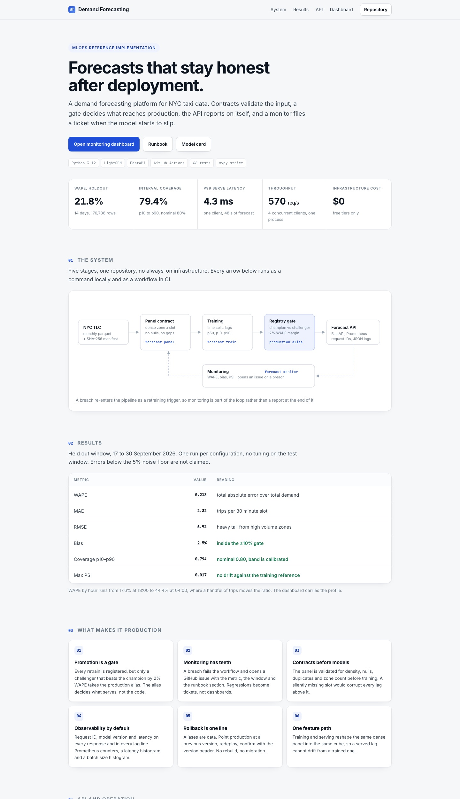
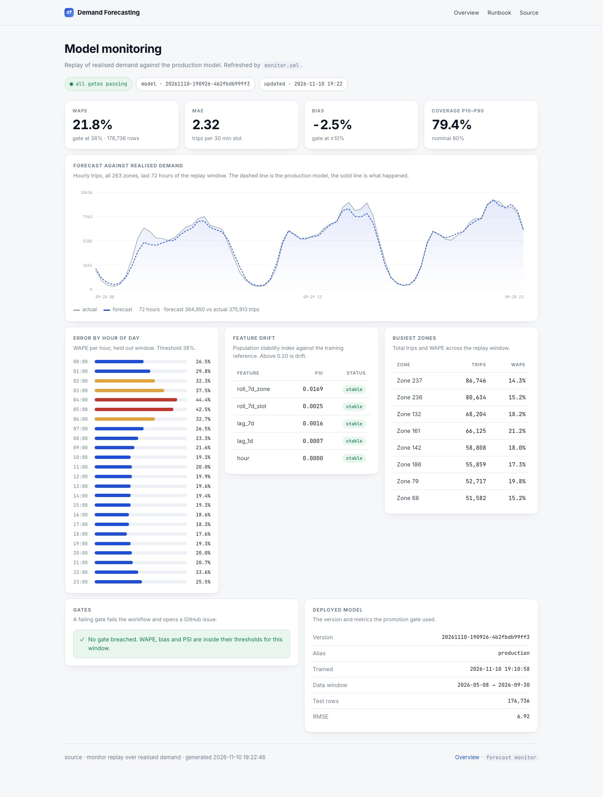

Demo, screenshots and figures
27 s demo · source, terminal, live page
aprameyacv.com/reports/demand-forecasting/


01What it is
A demand forecasting platform for NYC taxi data where the interesting part is everything after the model: input contracts, a champion and challenger gate, an API that reports on itself, and a monitor that files a ticket when the model starts to slip. Everything runs on free tiers, with no always-on infrastructure.
02How it works
- Five stages, one repository. Panel contract, time-split training, registry gate, served forecast API, drift monitor. Each runs as a command locally and as a workflow in CI.
- A gate with a margin. A challenger replaces the champion only if it wins by more than 2% WAPE.
- Monitoring closes the loop. A WAPE, bias or PSI breach opens a retraining issue, so monitoring is part of the pipeline rather than a report at the end.
03What it measured
| Metric | Value | Reading |
|---|---|---|
| WAPE | 0.218 | total absolute error over total demand |
| Coverage, p10 to p90 | 0.794 | nominal 0.80, band is calibrated |
| Bias | −2.5% | inside the ±10% gate |
| p99 serve latency | 4.3 ms | one client, 48-slot forecast |
| Throughput | 570 req/s | four concurrent clients, one process |
04What it does not claim
One run per configuration, no tuning on the test window, and errors below the 5% noise floor are not claimed. It is a reference implementation on public data, not a production deployment.